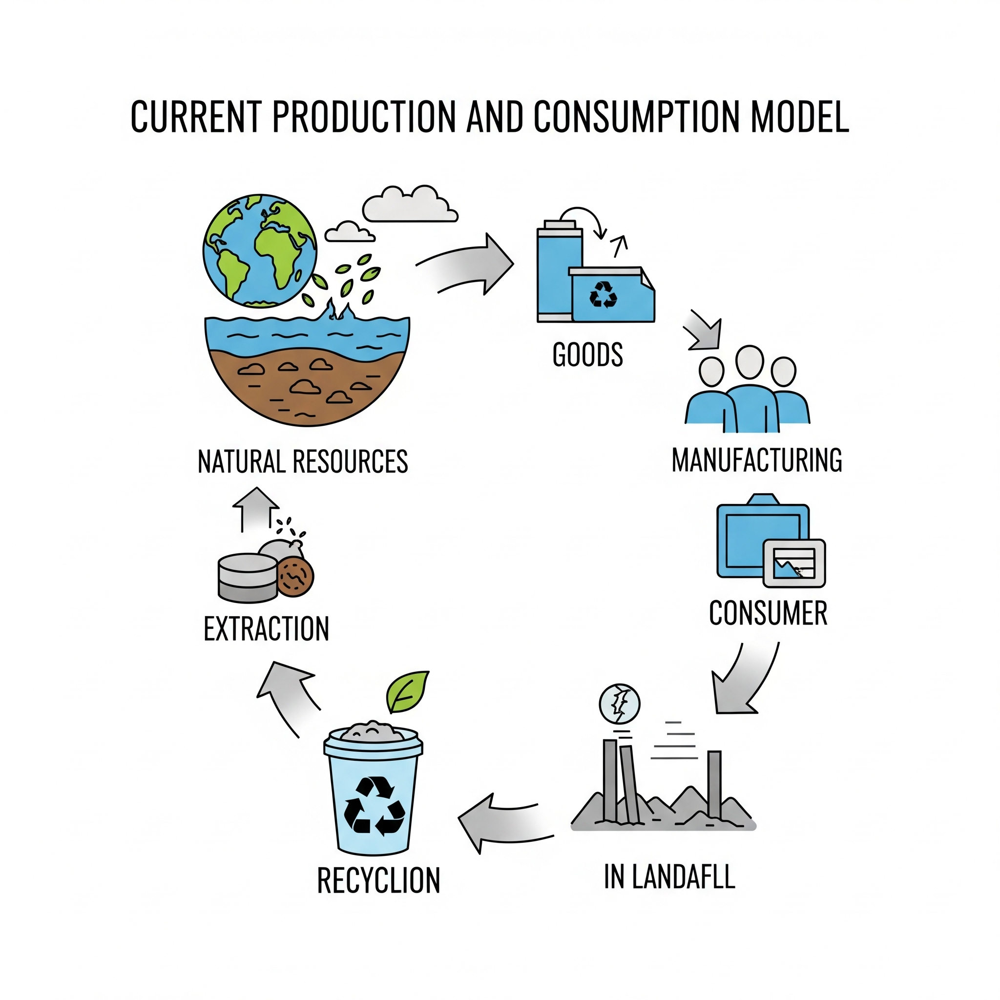

1. Modelo de producción y consumo actual
El modelo actual se basa en una economía lineal: producir, usar y tirar. Este sistema no tiene en cuenta el impacto ambiental a largo plazo, especialmente en sectores tecnológicos donde el consumo es rápido y constante.
En este capítulo analizamos sus características, consecuencias en nuestro sector y ejemplos de consumo digital poco sostenible.
Siguiente